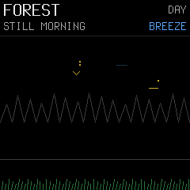

The Outside Inside
Generative field recordings for the M-VAVE FM-1, made entirely by synthesis. Fifteen places to stand in, from city streets, a summer meadow and the Arctic ice to an alien plain; four layers of sound that never quite repeat; for playing along with, or leaving on in the background.

Version 0.9.3 (a test release) · Install it · User guide · Play it in your browser · Source
Installing
Open the installer in Chrome or Edge on a computer, plug the FM-1 in by USB and follow the page. It installs over M-VAVE's own firmware or another FM-1 firmware, on FM-1s with either flash chip, and can put M-VAVE's firmware back. You install it at your own risk. Or download the-outside-inside-0.9.3.fwsc for the command-line installer: python3 tools/fm1_install.py the-outside-inside-0.9.3.fwsc.
Playing
| Control | What it does |
|---|---|
| K1 to K4 | the volume of WEATHER, ANIMALS, LANDSCAPE, HUMANS (the levels rise up as you turn) |
| SEL held + K1 to K4 | each layer's density: how often its events happen |
| HOME held + K1 to K4 | the macros: WEATHER, TIME, ACTIVITY, ENTROPY |
| ALGORITHM | the environment: JOURNEY (the Earth's places in turn), DREAM (places mixed at random), then alien, arctic, caves, city, desert, forest, industrial, jungle, meadow, mountain, ocean, savanna, space, swamp, village, then your own |
| SELECT, or tap SEL | the layer to edit; PRESET changes its preset |
| REC | randomise the macros |
| SAVE | save as your own environment (up to 8) |
| PLAY | stop and start |
| OCT- / OCT+ | the previous or next weather; on a journey, hold here or travel on now |
| the first four white keys | one event now from each layer |
| HOME tapped | the processor's load and whether settings are being saved |
| GLO | the GLOBAL menu: USB AUDIO, the level a computer records over USB: the VOLUME KNOB's, or always FULL LEVEL (the knob then sets only the speaker and headphones) |
ENTROPY is how much the scene changes by itself: at zero it stays as you set it; turned up, the weather drifts, the light changes and the place moves through its moods. Where a sound appears on the screen is where you hear it.
JOURNEY travels round the Earth's places by itself, about an hour a loop, the layers changing one at a time so the places blend into each other, the weather and the time of day moving on: a backdrop for a live set. K1 to K4 set its mix; WEATHER and TIME take over when turned. DREAM does the same through places mixed at random: an alien plain full of a factory's machines, a cave full of a meadow's birds.
The FM-1 also works as a USB audio interface: record it straight into a computer.
The user guide covers every place, weather and setting, with ideas to try.
Made by TheGrizard on fm1-base and felucca-bsp. Free software under the MPL-2.0.
M-VAVE and FM-1 are trademarks of their owners. The Outside Inside is not affiliated with M-VAVE.